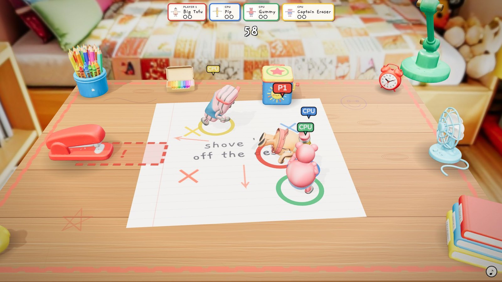
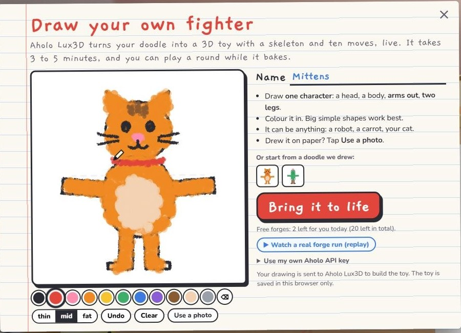
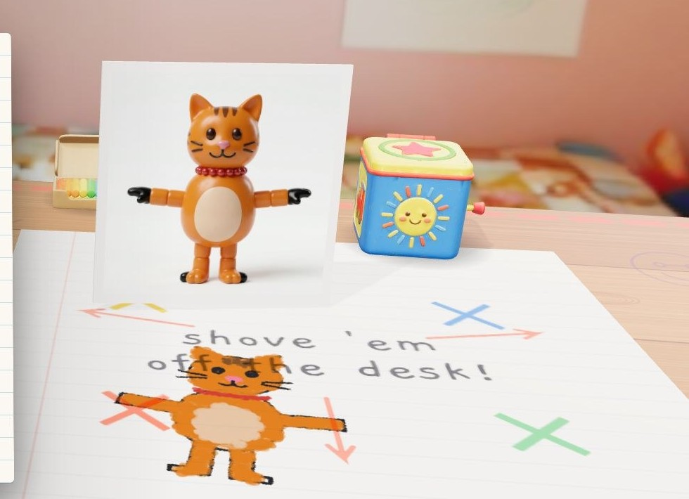
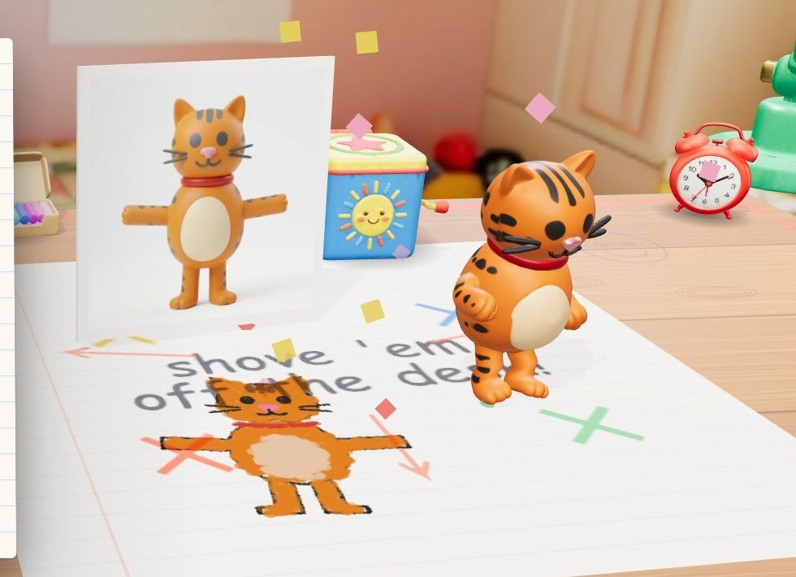

Doodle
Sumo
Draw a doodle. Three minutes later it is a 3D toy with a skeleton and ten moves. Then shove your rivals off a giant desk.
Every fighter, skeleton, move, trap joint and print file is made by Aholo Lux3D, including the ones players draw themselves.
automationbot24x7.github.io/doodle-sumo
Rajeev Bhandari · team Forge (solo) · Manycore Aholo Global 3D AI Hackathon · #Manycorehackathon





A cat drawn on the in-game pad → Lux3D toy concept → Lux3D 3D model → rigged and dancing, 3 min 34 s later.
1